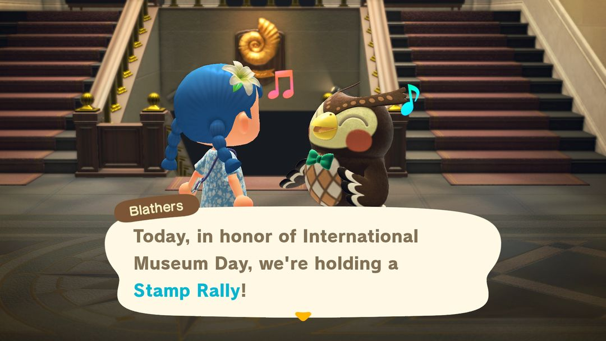
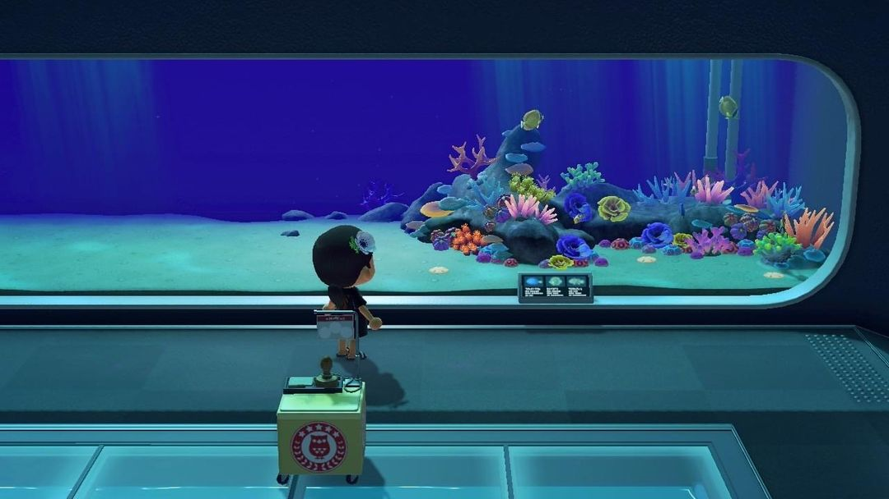
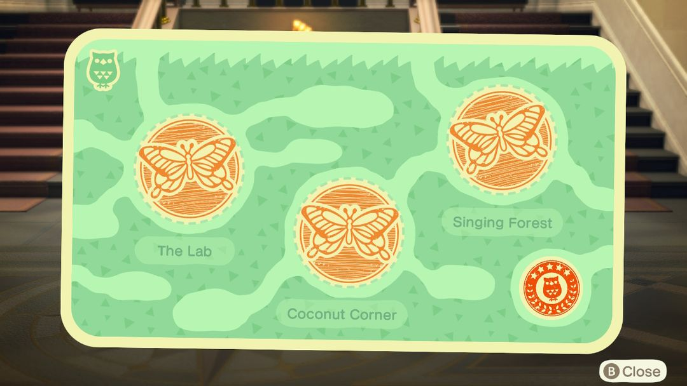
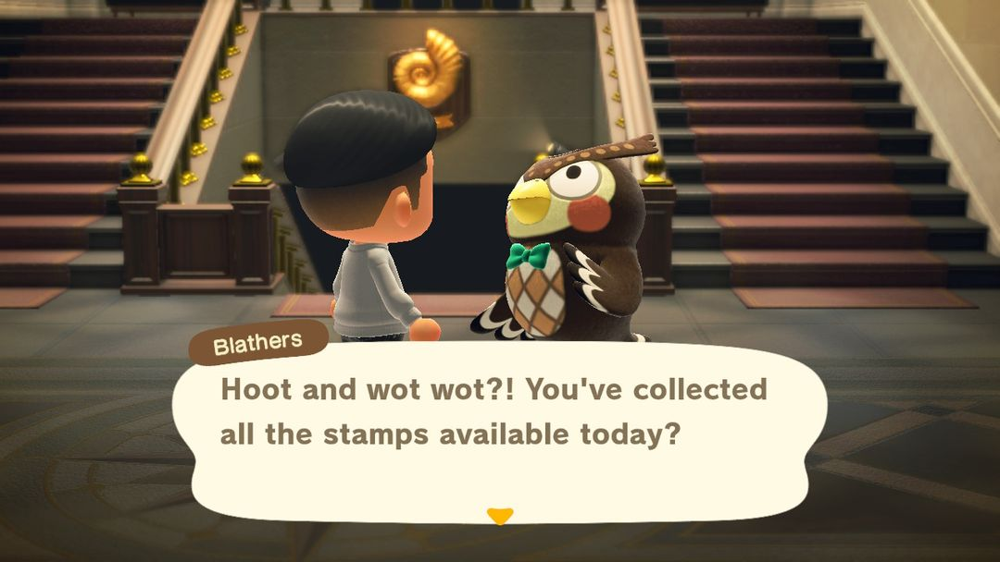

國際博物館日：在博物館集章，找傅達換壁飾
每年 5 月 18 日到 31 日，四個展區四張集章卡
國際博物館日是傅達在博物館裡舉辦的集章活動，每年 5 月 18 日到 31 日，南北半球是同一段日子。活動期間，蟲、魚、化石、美術四個展區裡各擺著幾個蓋章台，一個展區蓋滿就能找傅達換一塊這個展區的壁飾。壁飾在商店裡買不到，只有這個活動能拿到。
這個活動不用事先準備什麼，活動期間進博物館逛一圈就好。它真正划算的地方是每天都能再集一輪：壁飾一塊能賣 2,500 鈴錢，14 天裡天天去，存下的鈴錢相當可觀。博物館還沒蓋好美術展區的話，美術那張卡就沒辦法集，這點後面會說。

大廳裡的傅達：為了國際博物館日，館內正在舉辦集章（英文版畫面）（圖：Nookipedia）
01什麼時候
日期是固定的：每年 5 月 18 日到 5 月 31 日，一共 14 天，南北半球一樣。現實中的國際博物館日就是 5 月 18 日，遊戲從這天開始，連續舉辦兩週。
活動開始前和進行中，島上的公告都會提醒你。博物館全天開放，白天沒空的話，晚上過去也一樣能集。
02怎麼玩
整個流程很短，照下面幾步走：
· 第一步，進博物館，先找大廳裡的傅達說話，他會把規則講一遍。
· 第二步，去蟲、魚、化石、美術四個展區裡找放著印章的小台子，每個展區有 3 個，走到前面按 A 蓋章。
· 第三步，某個展區的 3 個章蓋滿了，就回大廳找傅達，他會在卡上蓋一個完成章，再把這個展區的壁飾送給你。
· 第四步，四個展區都交完，傅達會再誇獎你一次，當天的集章就結束了。
蓋章台每天都會換位置，不過只會在固定的那幾個地方輪換。各展區可能出現的位置數，和比較好找的幾個點，列在下面：
| 展區 | 位置數 | 好找的幾個 |
| 蟲 | 11 | 蝴蝶溫室南邊、大樹右邊、瀑布後的木橋 |
| 魚 | 10 | 小魚缸前、池塘前、珊瑚礁中間、矛尾魚那片深海 |
| 化石 | 7 | 入口左右兩側、梁龍前面、雙葉鈴木龍前面 |
| 美術 | 4 | 雕塑旁、後廳左邊、東西方美術品附近 |
蟲展區可能的位置最多，有 11 處，找起來最費工夫；美術展區只有 4 處，逛一圈大概就能遇到。

魚展區珊瑚礁前的蓋章台（圖：Nookipedia）

蓋滿 3 個章的蟲展區集章卡，右下角是傅達的完成章（英文版畫面）（圖：Nookipedia）
03能拿到什麼
每張集章卡集滿，換的是對應展區的一塊壁飾，四塊賣價都一樣：
| 集章卡 | 獎勵 | 賣價（鈴錢） |
| 蟲 | 蟲子壁飾 | 2,500 |
| 魚 | 魚兒壁飾 | 2,500 |
| 化石 | 化石壁飾 | 2,500 |
| 美術 | 藝術壁飾 | 2,500 |
壁飾是掛在牆上的家具，商店裡買不到，只能靠這個活動拿。四塊湊齊掛在同一面牆上，剛好是一套。
04幾個小技巧
一個展區一個展區來。蓋滿一張卡就回大廳交給傅達，再去下一個展區。蓋章台在展區裡繞一圈通常都看得到，可以先去上面表格裡那幾個常見位置看看，沒有再仔細找。
每天都能再領一輪。隔天蓋章台換了位置，集滿換來的還是那 4 塊壁飾。用不到的直接賣掉，一天最多 4 塊、10,000 鈴錢，14 天每天都來的話，最多能賣到 14 萬鈴錢。
博物館還沒有美術展區的島，美術那張卡就沒辦法集。得先在狐利那裡買到真的藝術品捐給傅達，博物館才會擴建美術展區。活動只有兩週，趕得上的話可以先把這件事辦好。
四塊壁飾擺在一起。掛在博物館風格的房間裡很適合，自己先留一套，多出來的再賣。

四個展區都蓋滿，傅達會說當天的章都集齊了（英文版畫面）（圖：Nookipedia）
05版本變化
這個活動是 2020 年的 1.2.0 加進來的，當時只有蟲、魚、化石三個展區有蓋章台。2021 年的 1.10.0 補上了美術展區的蓋章台，壁飾的賣價也從 300 漲到 2,500。2.0 和 3.0 的更新說明裡都沒提到這個活動。
動森圈圈 · iOS App 和微信小程式都搜「動森圈圈」